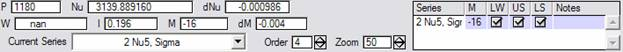

• Loomis-Wood Add-In
Version
2.08
June 3,
2005
Christopher
F. Neese
cfneese@uchicago.edu
<http://fermi.uchicago.edu/freeware/LoomisWood.shtml>
Contents
Theory
License
Features
System Requirements
Upgrading
Getting Started with the Add-In
Working with Band Heads
How It Works
Troubleshooting
Menu/Command Reference
Keyboard Reference
Function Reference
Structures
Customization
Revision List
To Do List
References
Theory
Most
molecular spectra contain series of lines that are readily fitted to
polynomials of the quantum number J, or some index directly related to J. For example, for a linear molecule, the P
and R branches can be to fit to the same polynomial if we use m
instead of J, where m = -J for a P-branch line and m
= J - 1 for an R-branch line.
If we plot m verses the residual of such a fit, we have a basic
Loomis-Wood plot. In this plot a
well-fit rotational series will appear as a vertical line of points. If the fit is not optimal but close, a
series will appear as a line of points with a small slope and/or a small
curvature from the error of the fit. It
is relatively easy to follow such a series in a Loomis-Wood plot even when the
series is not-so-obvious in the actual spectrum. The extra dimension of the Loomis-Wood plot
creates a higher information-density than in the raw spectrum. By plotting the Loomis-Wood plot using
triangles of height and width proportional to line intensity and line width,
this information density can be increased further.
Loomis
and Wood were the first to use this two-dimensional representation of a
spectrum in 1928. While simply drawing
Loomis-Wood plots is relatively straightforward, the time required to manually
create a Loomis-Wood diagram limited the usefulness of these plots in the
initial assignment of spectra before the advent of microcomputers. The first computer program to generate a
Loomis-Wood plot was written at the Ohio State University in the 1960s. When a Loomis-Wood plot is made interactive
so that assignments can be made in the plot and linked to an assignment database
a powerful tool is created. The first
interactive Loomis-Wood applications by Winnewisser et al. appeared in
the 1980s. The Loomis-Wood add-in
follows in the tradition of these interactive programs.
License
Copyright (c) 2005
Christopher F. Neese
THIS SOFTWARE IS
PROVIDED "AS IS", WITHOUT WARRANTY OF ANY KIND, EXPRESS OR IMPLIED,
INCLUDING BUT NOT LIMITED TO THE WARRANTIES OF MERCHANTABILITY, FITNESS FOR A
PARTICULAR PURPOSE AND NONINFRINGEMENT. IN NO EVENT SHALL THE AUTHORS OR
COPYRIGHT HOLDERS BE LIABLE FOR ANY CLAIM, DAMAGES OR OTHER LIABILITY, WHETHER
IN AN ACTION OF CONTRACT, TORT OR OTHERWISE, ARISING FROM, OUT OF OR IN
CONNECTION WITH THE SOFTWARE OR THE USE OR OTHER DEALINGS IN THE SOFTWARE.
For the time being, users should cite this work as:
An Interactive Loomis-wood Package for Spectral Assignment in Igor Pro, Version 2.0., Neese, C. F. Fifty-sixth Ohio State University International Symposium on Molecular Spectroscopy, Columbus, Ohio, June 20-24, 2005
(Please check the website <> for latest information on citing this work.)
Features
The
add-in is Macintosh and Windows compatible.
(Version 1.0 was not Macintosh compatible.)
The
add-in provides an organized line/assignment database.
Lines
can be assigned to multiple series.
Multiple
Loomis-Wood data sets can be created within a single Igor experiment.
Multiple
plots of a single Loomis-Wood data set can be created within a single Igor
experiment.
There
is a user-extensible extract assignments feature. This feature allows the add-in to be used
easily with external fitting programs.
Since
the add-in is written for Igor (instead of as a stand-alone program) all of
Igor’s features are available to the add-in.
For example, printing and graphics export are provided by Igor, not the
add-in.
System
Requirements
The
add-in requires Igor 5.02 or later.
Performance should be acceptable on any Pentium-4 based computer.
Upgrading
The
data format for version 2.x of the Loomis-Wood add-in is substantially
different from version 1.0. Therefore no
direct upgrade route has been provided.
If you need a method to upgrade an experiment using Loomis-Wood 1.0 to
2.x please contact the author.
If the
user needs to update from version 2.x to a newer version of the Add-In, it may
be necessary to close all LW plots and recreate them from the Loomis-Wood
menu. This can be done without losing
any assignments, and is only necessary if the user finds odd behavior after an
update. The author will try to note any
upgrades that require this procedure here.
Getting
Started with the Add-In
0. Install Igor Pro or the Igor Pro demo. If you are new to Igor, read “Volume I: Getting Started” of the Igor manual.
1. Copy the
"LoomisWood.ipf" procedure file to the "User Procedures"
subfolder of the IGOR program folder.
The path for the "User Procedures" folder is typically "C:\Program
Files\WaveMetrics\Igor Pro Folder\User Procedures" for a Windows PC.
2. Load/Create a line
list of your data in Igor. (A sample
experiment, “ethylene-lw.pxp”, which includes a spectrum and line list of
ethylene from HITRAN is provided with the add-in.) The Add-In requires a listing of line-center
frequencies contained in a single 1D wave.
A listing of line intensities and/or line widths is optional. If provided, these lists should be contained
in separate 1D waves. The intensity wave
should reflect absorption not transmission.
Also, the values in the intensity wave should all be positive.
3. Open the procedure
window of your IGOR experiment. (Press
Ctrl-M.) Add the line
#include "LoomisWood"
to the
top of the procedure window. This will
create the Loomis-Wood menu and make available all of the procedures
associated with this add-in.
4. Create a Loomis-Wood data set by selecting Loomis-Wood
| Data Sets | Create a New Loomis-Wood Data Set.... A dialog box will ask you for the name of the
new folder, then a second dialog box will ask you to select the waves of your
line listing. You can choose _constant_
if you do not have waves with line widths and/or line intensities. You can work with multiple data sets in the
same Igor Experiment by creating multiple Loomis-Wood folders.
5. A Loomis-Wood plot named "Plot0"
will be created automatically. You can
create multiple Loomis-Wood plots for the same Loomis-Wood folder by selecting Loomis-Wood
| Plots | Create a New Loomis-Wood Plot...
A dialog box will ask you for the Loomis-Wood folder containing the data
for the plot, and a name for the subfolder that will contain data specific to
the new Loomis-Wood plot.
6. In the new plot you will see the lines from
your data set represented as triangles.
The height and width of these shapes will reflect the relative line
intensities and the line widths of your data set. There is a cursor that you can move from line
to line using the arrow keys. If you
click on a single line, the cursor will jump to that line. At the top of the
plot the details of the currently selected line are displayed. You can use the PageUp and PageDn keys to
scroll the plot up or down to the region of interest.
7. Edit the band constants to make the
Loomis-Wood plot match a series in your spectrum. Do this by choosing Loomis-Wood | Plots |
Edit Band Constants.... Even if you
do not have precise constants for your molecule, you will need to provide
initial guesses for the band origin and rotational constants to get a
meaningful display.
8. If your band constants are reasonable, you
should be able to identify a series as a vertical line of triangles in the
display area. You probably will need to
scroll to the region of interest using the Page keys if you have not already
done so. If you cannot identify a
series, you will need to go back to step 7 and refine your constants.
9. The next step is to assign a series. Begin by creating a new series by choosing Loomis-Wood
| Series | Start a New Series....
You will be asked to name the series and choose a color for the
series. You can now assign the series by
selecting the lines to assign with the cursor and pressing the Enter key. You can use the Delete key to remove an
incorrect assignment.
10. Once you have a series assigned or partially
assigned, you can refine the rotational constants by performing a fit. Do this by selecting Loomis-Wood | Series
| Fit Current Series.
11. If the value of m is off
(corresponding to misassignment of J), then the constants produced by
the fit will be meaningless. To correct
this, choose Loomis-Wood | Series | M-Shift Current Series…. You will be asked for a correction which will
be added to the current m values of the current series.
12. Repeat steps 7-11 to assign additional
series. A complete list of assignments
can be created by selecting Loomis-Wood | Data Sets | Extract Assignments....
Working
with Band Heads
When a
series has a band head, the fitting function is no longer monotonic. Since the add-in relies on inversion of the
fitting function to create the Loomis-Wood plot, this causes problems. To deal with this problem, the add-in
calculates the regions of monotonicity of the fitting function. Initially, the add-in uses the region of
monotonicity that includes m=0.
The Loomis-Wood | Plots | Change Region... command can be used to
select another region of monotonicity.
Using this command, both sides of a band head can be assigned.
Please
note that when a series has a band head, the width of each line will get
smaller as one approaches the band head.
This gives the Loomis-Wood plot a triangular appearance. If you notice that a Loomis-Wood plot takes
on a triangular or trapezoidal appearance, you can be pretty sure that your
fitting function involves a band head.
Finally
note that as one works away from a band head the distance between lines can
become quite large. If this occurs the
Loomis-Wood plot may become unreadable.
To fix this, you should zoom in on the horizontal axis. This cannot be done with the mouse (as the
add-in overrides mouse input), but can be done via the Graph menu or the
command line. Also, you may need to edit
the value of the FIVEMAX_PEAKS_PER_PLOT constant in the procedure file.
How it
Works
The
Loomis-Wood Add-In makes extensive use of Igor's data folders. By using data folders, the add-in is able to
work with multiple data sets and plots within a single IGOR experiment
file. An additional advantage is that
the add-in will not accidentally conflict with the user’s other data. Users unfamiliar with data folders in Igor
may want to skim the “Data Folders” chapter in the Igor manual. The Add-In will create a folder named
“root:LW”. (The name of this folder can
be changed by modifying the BASE_FOLDER strconstant in the procedure
file.) Within this folder the Add-In
will create data set folder(s). All of
the data that the add-in needs for a data set is stored within the data set
folder.
The
Loomis-Wood data set folder:
When a
new Loomis-Wood data set folder is created, the following subfolders and waves
are created within that folder:
Lines subfolder: Frequency, Intensity, Width, and Assignments
Series subfolder: Name, Color, Order, Data, and Shape
Band2Poly, Poly2Band, and
BandCoeffLabels , and Colors
The
waves in the Lines subfolder are copied from the line listing used to create
the Loomis-Wood folder. The waves will
be sorted by frequency. Assignments is a text wave reflecting assignments. An unassigned line will have an empty string
in this wave, where as an assigned line will contain a semicolon-separated list
of assignments, e.g. "1:-29,1,1,1,;3:10,1,1,1,". The assignments in this wave are of the form
"series:m,mask1,mask2,mask3,note", where series is the number
of the series, m is the polynomial index (related to J), and mask1,
mask2, and mask3 are 1 or 0 depending on whether the line is used in
fitting or not, and note is a note about the assignment.
The
waves in the Series subfolder contain information on assigned series. In particular, Data is a text wave with a
semicolon separated list of assignments.
The assignments in this wave are of the form
"pnt:m,mask1,mask2,mask3,note", where pnt is the point number
in the Lines subfolder waves and m, mask1, mask2, mask3, and note
are the same as above. The first element
in these waves applies to unassigned lines.
This allows the color and shape of unassigned lines to be changed.
The
shape of a line is a hollow peak for Shape=0, a solid peak for Shape > 0 and
invisible for Shape < 0. Note that invisible
lines can still be selected with the cursor.
The color of a line is a number corresponding to RCG pair in the Colors
wave. If a line is assigned multiple
times, it will take its color and shape from the first series in the
Lines.Assignments string.
The
Colors wave is a three-column wave containing RGB values. These values determine the colors associated
with the Series:Color wave. The labels
of this wave contain the names for these colors. The first row in these waves is used by
default for unassigned lines. This wave
can quickly be edited by selecting Loomis-wood | Data Sets | Edit Colors...
The
Band2Poly and Poly2Band are the linear transformation matrices between the
polynomial coefficients and rotational constants. With these matrices, curve
fitting can be done using a polynomial and then the results transformed into
rotational constants. The default
constants used are nu0, B", deltaB, D", deltaD, H" and
deltaH". If the user prefers a
different set of constants (such as nu0, B", B', D", D', H", H')
these two matrices can be edited. The
BandCoeffLabels text wave simply contains descriptions for the rotational
constants.
In
addition to the above waves, the Loomis-Wood folder may contain a Plots folder
(containing one or more plot folders), a SeriesFit folder, and/or an
Assignments folder.
The
add-in’s “assignment database” is comprised essentially of the Series:Data and
Lines:Assignments waves. By having the
assignment information recorded both “by line” and “by series”, the add-in can
quickly access assignment information. A
catch to this system is that any function that modifies assignments must change
both of these waves. If only one of
these two waves is changed, the SynchronizeSeries2Lines() or
SynchronizeLines2Series() functions can be used to recalculate the other wave.
Warning: It is very important not to manually edit the
waves in the Lines subfolder. Changing
these waves can scramble assignments!!!
If one
does need to edit the waves in the Lines subfolder, one should call Loomis-wood
| Data Sets | Synchronize Series to Lines when finished. This routine will sort the waves and update
the Series folder so that the Loomis-Wood add-in continues to function. Even with this function, functionality can be
lost if one is not careful. Make sure
your experiment is saved before trying this!!!
An
alternative to manually editing the Lines subfolder is the Data Sets |
Update Line List... command. This
command is provided for situations where the line list is not static. For example, if the user wants to measure
lines as the assignment progresses you would call this function each time you
measured new lines.
The
waves in the Series subfolder may be edited but should not be sorted or
redimensioned. The Data wave in the
Series subfolder should not be manually edited.
If one
does need to sort the waves in his folder, run the Loomis-wood | Data Sets |
Synchronize Lines to Series when finished.
Again make sure your experiment is saved before trying this!!!
Band2Poly
and Poly2Band may be edited, but they must be matrix inverses of each other.
The
Loomis-Wood plot folder:
A
Loomis-Wood plot folder contains the waves used to render a Loomis-Wood
plot. In particular, each plot has a
wave named BandCoeff that contains the rotational constants used to create the
Loomis-Wood plot. A Loomis-Wood folder
can contain multiple Loomis-Wood folders so that different plots of the same
data set can be shown concurrently. Four
dependency formulas keep the data in the Loomis-Wood plot folder synchronized so
that the display is accurate:
BandCoeffUpdate := DoBandCoeffUpdate(BandCoeff)
TriangleUpdate := DoTriangleUpdate(Line_LWm, ::Lines:Assignments, ::Series:Color,
::Series:Shape, StartM, EndM, Zoom)
SeriesOrder := DoSeriesOrderUpdate(::Series:Order, CurrentSeries)
SeriesNameUpdate := DoSeriesNameUpdate(::Series:Name, CurrentSeries)
The use
of dependencies to keep the Loomis-Wood plot accurate is important, since the
data that trigger these dependencies are not necessarily changed
programmatically.
DoBandCoeffUpdate
calculates Line_LWm and Line_DF (delta frequency) whenever BandCoeff
changes. The Loomis-Wood plot is
essentially a scatter plot of Line_LWm vs. Line_DF. Since BandCoeff changes rather infrequently,
Line_LWm and Line_DF can be calculated completely whenever BandCoeff changes,
without performance degradation.
However,
in order to get the triangle line shape that reflects intensity, width, and
assignment in the Loomis-Wood plot, we actually plot Triangle_Yup,
Triangle_Ydown vs Triangle_X, with the mode of Triangle_Yup set to Fill to
Next. The Triangle_ waves (including
Triangle_Color) are calculated by DoTriangleUpdate.
DoTriangleUpdate
executes whenever the ::Lines:Assignments wave is changed. This occurs whenever an assignment is made,
changed or removed. The response of
making an assignment must be rapid, hence this function must execute as quickly
as possible. Thus, the Triangle_ waves
do not contain information to render the entire line list, but just the portion
of the line list that is to be displayed.
Furthermore, the size of these waves is fixed at
FIVEMAX_PEAKS_PER_PLOT. Redimensioning
the Triangle_ waves takes too much time.
The
DoSeriesOrderUpdate() function updates the SeriesOrder variable whenever the
user changes the Series:Order wave or changes the current series. This is done so that the order SetVariable
control of the Loomis-Wood plot can reference a variable (SeriesOrder) instead
of an element of a wave (::Series:Order[CurrentSeries]).
The
DoSeriesNameUpdate() function updates the current series popup menu whenever
the user changes the Series:Name wave or changes the current series.
Useful
Data in the Loomis-Wood plot folder:
There
are several waves and variables created in the Loomis-Wood plot folder that may
be useful to the user. In particular,
the user may wish to create dependencies to these variables to keep a graph of
the original spectrum synchronized with a Loomis-Wood plot. (See the chapter “Dependencies” in the Igor manual for more information.) Please note that these variables should be
considered “read-only.”
The following list is the data most useful for creating other
displays. The data in the SeriesFit and
Assignments folders (described below) will also be useful.
startNu, endNu The starting and ending frequency of the Loomis-Wood plot. Note that endNu < startNu is possible when dn/dm < 0.
startM, endM The starting and ending m of the Loomis-Wood plot.
startP, endP The start and ending point numbers of the lines drawn in the Loomis-Wood plot. Note that the number of lines drawn is limited by the constant FIVEMAX_PEAKS_PER_PLOT.
minNu, maxNu The current frequency limits of monotonicity of the fitting polynomial. Note that if dn/dm < 0, minNu corresponds to maxM and maxNu corresponds to minNu.
minM, maxM The current m limits of monotonicity of the polynomial.
minP, maxP The first and last point number (from the Lines data folder) that are within the limits of monotonicity.
lwCursor_P The point number of the line selected by the Loomis-wood cursor.
lwCursor_M The m value of the line selected by the Loomis-wood cursor.
lwCursor_Nu The frequency of the line selected by the Loomis-wood cursor.
lwCursor_dNu The residual of the line selected by the Loomis-wood cursor. (this is the horizontal axis of the Loomis-Wood plot.)
lwCursor_I The intensity of the line selected by the Loomis-wood cursor.
lwCursor_W The width of the line selected by the Loomis-wood cursor.
CombX The frequency values of the fitting polynomial. Append CombY vs CombX to a graph of the spectrum and set the mode to sticks to zero to show the fitting polynomial on the original spectrum
CombY A wave of ones of the same length as CombX.
CombM The m values corresponding do CombX.
The
SeriesFit folder:
The
SeriesFit folder is where data for a series is extracted for the Series |
View Current Series… and Series | Fit Current Series commands. In this folder, you will find the following
waves:
Frequency the frequency of the
line.
Intensity the intensity of the
line.
Width the width of the
line.
theM the y-axis of
the Loomis-Wood plot
Select a flag indicating
whether this line will used in fitting.
Residual the x-axis of the
Loomis-Wood plot
If the
series is fit, the following waves will contain the results of the fit:
M_Correl the correlation matrix
M_Covar the covariance matrix
W_Coef the coefficients of
the fit
W_Sigma the error in the
coefficients of the fit
Note
the data in this folder is not synchronized with the Loomis-Wood data set. Editing the data in this folder will not
assign , unassign, mask, or unmask lines in the data set.
The
Assignments folder:
The
Assignments folder is where the data from the Data Sets | Extract
Assignments… command is collected.
(The waves in this folder must be updated manually using the Extract
Assignments command.) When the user
selects Extract Assignments, a dialog will ask for an Assignment Function. This function is user supplied and must use
the following prototype:
function LWLabelProto(a, s)
STRUCT AssignmentListStruct &a
STRUCT SeriesStruct &s
end
By
implementing this function, the Extract Assignments command can generate a
complete set of quantum numbers compatible with other fitting programs such as
CALFIT. Some example code is:
function ProlateAsym(a, s)
STRUCT AssignmentListStruct &a
STRUCT SeriesStruct &s
variable i, imax, freq, weight
imax = numpnts(a.Frequency)
string DF = GetDataFolder(1)
SetDataFolder GetWavesDataFolder(a.Frequency, 1)
Make/T/O/N=(imax) QN_US, QN_LS
SetDataFolder DF
string QN
for (i=0 ; i < imax ; i += 1)
freq = a.Frequency[i]
weight = a.LSmask[i] && a.USmask[i]
QN = ProlateAsymQN(s.Name[a.SeriesIndex[i]], a.theM[i])
QN_US[i] = QN[0,11]
QN_LS[i] = QN[12,23]
sprintf QN, "%s %14.6f %14.6f %15.6f", QN, freq, -0.001, weight
a.Assignment[i] = QN
endfor
end
Function/S ProlateAsymQN(name, m)
string name
variable m
if ( ItemsInList(name,",") != 6 )
return ""
endif
string dKa = UpperStr(StringFromList(1,name,","))
string dJ = UpperStr(StringFromList(2,name,","))
variable Ka = round(str2Num(StringFromList(3,name,",")))
string SR = UpperStr(StringFromList(4,name,","))
variable S = round(str2num (StringFromList(5,name,",")))!=0
if (Ka < 0)
return ""
elseif (Ka==0 && S != 0)
return ""
endif
variable Ka2 = Ka + char2num(dKa) - char2num("Q")
variable J, J2
strswitch (dJ)
// Treat P and R the same so that P and R lines can be fir to same polynomial
case "P":
case "R":
if (M < 0)
J = -M
J2 = J-1
else
J = M-1
J2 = J+1
endif
break
case "Q":
J = abs(M)
J2 = J
break
default:
return ""
break
endswitch
if (Ka > J || Ka2 > J2)
return ""
endif
Variable S2 = abs(S+J2-J)
strswitch (SR)
case "A":
if ( mod(abs(Ka2 - Ka), 2) != 0)
return ""
endif
S2=mod(S2+1,2)
break
case "B":
if ( mod(abs(Ka2 - Ka), 2) != 1)
return ""
endif
S2=mod(S2,2)
break
case "C":
if ( mod(abs(Ka2 - Ka), 2) != 1)
return ""
endif
S2=mod(S2+1,2)
break
default:
S2 = NaN
break
endswitch
if (Ka2==0 && S2 != 0)
return ""
endif
Variable Kc = J - Ka + S
Variable Kc2 = J2 - Ka2 + S2
String res
sprintf res, "%3d%3d%3d 1%3d%3d%3d 0 ", J2, Ka2, Kc2, J, Ka, Kc
return res
End
This above code uses the Series Name wave to assign prolate asymmetric top quantum numbers. The series name should be a list of the form name, DJ, DK, Ka, SR, s where DJ is “P”, ”Q”, or “R”, DK is “P”, ”Q”, or “R”, etc., SR is “A”, ”B”, or “C”, and s = Ka + Kc J. Using the above code as an example, it should be fairly easy to create an assignment function for any type of molecule.
Note that the data in this folder is not synchronized with the Loomis-Wood data set. Editing the data in this folder will not assign , unassign, mask, or unmask lines in the data set.
Troubleshooting
If you
have problems with the add-in, please try the following.
1. If one of the add-in routines aborts, Igor
may be left in one of the Loomis-Wood data folders. The telltale symptom of this problem is
"missing" data. You can check
the current data folder using the Data Browser, or simply change the datafolder
by typing:
SetDataFolder root:
in the
Command Window.
2. If something goes wrong with the
Loomis-Wood display, simply close the plot, then Create a New Loomis-Wood Plot
from the Loomis-Wood menu. This can be
done without losing any assignments, and will correct any problems created by
bad constants or accidental user modifications of the graph or underling dependancies. (Often, you can reuse the existing plot
folder name during this fix without any problems.)
3. The Loomis-Wood add-in will only display
lines within a single monotonic region of the fit polynomial. (See Working with
Band Heads.)
4. Most of the menu items
in the LoomisWood menu are only available if the top graph is a Loomis-Wood
plot. If a menu item is disabled, make
sure you have a Loomis-Wood plot as the top graph.
5. If the Loomis-Wood
plot does not respond to keystrokes, check to make sure the plot is the active
window. You may also find that the plot
only responds to keystrokes when the mouse cursor is over the plot area.
Menu/Command
Reference
Data
Sets | Create a New Loomis-Wood Data Set... NewLWDataSet()
This
command creates a new Loomis-Wood data set.
The user will be asked for a folder name, then for a wave containing
line frequencies and optional intensities and widths. These waves will be used to create a new data
set folder and a default plot named “Plot0” will be created.
Data Sets
| Delete a Loomis-Wood Data Set... DeleteLWDataSet("")
This
command will delete an existing Loomis-Wood data set. With a null (“”) argument a dialog will ask
for the name of the folder. Otherwise,
the argument should be the path-free name of the folder to delete. Before calling this command, all plot windows
should be closed.
Data
Sets | View Line List... ViewLineList()
This
command will create a table of the waves in the Lines subfolder of the data set
associated with the top LW plot. This
data should not be manually edited, but if editing is necessary, call the Data
Sets | Synchronize Series to Lines command when finished.
Data
Sets | View Series List... (F8) ViewSeriesList()
This
command will create a table of the waves in the Series subfolder of the data
set associated with the top LW plot.
This data can be manually edited, but if sorting or reordering is
neccessary, call the Data Sets | Synchronize Lines to Series command
when finished.
Data
Sets | Fit All Series (Shift-F9) FitAll()
This
command will fit each series in the Data Set and create a report in a notebook
named LWresults. The Command also
creates a two-dimensional wave of the band coefficients in the Series folder
named BandCoeffTable.
Data
Sets | Extract Assignments... (F9) ExtractAssignments("")
This
command will create a table containing a listing of the assigned lines in the
data set. With a null (“”) argument, the
user will be asked for an optional assignment function. This function can be used to quickly convert
the add-ins listing to a form suitable for a separate fitting program. See “The Assignments folder” above.
Please
note that the data in the resulting table is not synchronized with the master
line list. . Editing the data in this table will not
assign , unassign, mask, or unmask lines in the data set.
Data
Sets | Update Line List... UpdateLinesFolder(NaN)
This
command is designed to be run when your line-listing as been modified outside
of the add-in. For example, if you
re-measure lines or add lines to the line listing, you should call this
function. You can also call this
function to add or remove widths and/or intensities from the data-folder. (Backup your data first, as assignments can
be lost.) With NaN as an argument, the
user will be asked for a tolerance. If
lines have only been added ore removed, then tolerance can be 0. If the line centers have changed however,
tolerance should be larger than zero. If
a line in the new line listing is within +/- tolerance of the old listing, then
the two lines are considered the same, and the new line will inherit the
assignments of the old line. If there
are multiple new lines within +/- tolerance of the old line, the closest new
line will inherit the assignments of the old line. If no line in the new listing is within +/-
tolerance of an assigned line in the old listing, then a warning will be
printed to the history window.
The
first thing this command does is duplicate the Lines folder as LinesBak. Thus, if you have problems, you can copy the
data from the LinesBak subfolder back to the Lines subfolder.
Data
Sets | Synchronize Series to Lines SynchronizeLines2Series()
This
command sorts the waves in the Lines subfolder by Lines:Frequency, then
recreates the Series:Data wave from the Lines:Assignments wave. This is necessary when the waves in the Lines
folder are manually edited.
Data
Sets | Synchronize Lines to Series SynchronizeSeries2Lines()
This
command recreates the Lines:Assignments wave from the Series:Data wave. This is necessary when the waves in the Series
folder are manually sorted, redimensioned or otherwise reordered.
Data
Sets | Edit Colors EditColors()
This
command creates a table containing the Colors wave. This table can be manually edited as needed.
Plots |
Create a New Loomis-Wood Plot... NewLWPlot("","")
This
command creates another Loomis-Wood plot.
With null arguments, the user will be asked for an existing data set and
a name for the new plot.
Plots |
Change M-axis scaling... (F11) ChangeRange(0,0)
This
command can be used to change the y-axis scaling of a Loomis-Wood plot. With 0,0 as the arguments, the user will be
asked for the new minimum and maximum values for m.
Plots |
Edit Band Constants... (F12) EditBandConstants()
This
command allows the user to manually edit the constants used to draw the lop
Loomis-Wood plot. This is necessary in
the beginning of an assignment to get the assignment started. After the assignment is started, one usually
adjusts the constants via Series | Fit Current Series. The change can be undone with Series |
Undo Last Fit.
Plots |
Change Region... (Shift-F12) ChangeRegion()
This
command allows the user to select which monotonic region the plot
displays. This is necessary when working
with series that involve band heads. See
Working with Band Heads for more details.
Series |
Start a New Series... (F2) AddSeries()
Starts
a new series. The user will be asked for
a name and color for the new series.
Series |
Select a Series… (F3) SelectSeries()
Changes
the current series.
Series |
Delete a Series… (F4) DeleteSeries()
Deletes
a series.
Series |
Fit Current Series (F5) Print
FitSeries(GetCurrentSeriesNumber())
Fits
the current series. Can be undone with Series
| Undo Last Fit.
Series |
Undo Last Fit (Shift-F5) UndoFit()
Reverts
the constants used in the topmost Loomis-Wood plot to their previous values. (The Undo level is only one.)
Series |
M-Shift Current Series (F6) ShiftSeries(GetCurrentSeriesNumber(),0,1)
This
command adjusts the assignment of m for the current series and adjusts
the current constants to reflect this change.
Series |
View Current Series… (F7) ViewSeries(GetCurrentSeriesNumber())
This
command creates a table containing the current series. This table is not updated when new
assignments are made, but is updated upon a fit.
Please
note that the data in the resulting table is not synchronized with the master
line list. . Editing the data in this table will not
assign , unassign, mask, or unmask lines in the data set.
Series |
View Series List... (F8) ViewSeriesList()
Same as
Data Sets | View Series List....
Keyboard
Reference
F2 Start
a New Series...
F3 Select
a Series…
F4 Delete
a Series…
F5 Fit
Current Series
Shift-F5 Undo
Last Fit
F6 M-Shift
Current Series
F7 View
Current Series…
F8 View
Series List...
F9 Extract
Assignments...
F11 Change
M-axis Scaling...
F12 Edit
Band Constants...
The
actions corresponding to the function keys are described above.
Enter Assign
Line
Enter
assigns the current line to the current series.
There is no menu command corresponding to this action.
Delete (Ctrl-Backspace) Unassign
Line (From Current Series)
Delete
unassigns the current line from the current series. There is no menu command corresponding to
this action.
Backspace Reserved
Home Reserved
End Reserved
Up Move
Cursor Up
Down Move
Cursor Down
Left Move
Cursor Left
Right Move
Cursor Right
The
cursor can also be moved by single-clicking a line with the mouse.
PageUp/PageDn Scroll
Up/Down
The
graph can also be scrolled using the Change M-axis Scaling... (F7)
command.
K Toggle
Loomis-Wood Fit Flag
U Toggle
Upper State Fit Flag
L Toggle
Lower State Fit Flag
The
Loomis-Wood fit Flag determines whether the add-in uses a line in a fit or
not. The other two fit flags are
provided for external use. There are no
menu commands corresponding to K, U, or L but the flags can also be toggled
with the listbox in the control bar of a Loomis-Wood plot.
Loomis-Wood
Toolbar

P The point
number of the selected line.
(Non-editable)
Nu The frequency
of the selected line. (Non-editable)
dNu The residual of
the selected line. (X-axis of plot)
(Non-editable)
W The width of
the selected line. (Non-editable)
I The
intensity of the selected line.
(Non-editable)
M The m
selected line. (Y-axis of plot) (Non-editable)
dM The relative
residual of the selected line. (Non-editable)
Current
Series The current series
being assigned. Changing the series here
is equivalent to Series | Select a Series…
Order The order to
which the current series will be fit.
Editing this value is equivalent to modifying Order on the Data Sets
| View Series List... table.
Zoom The magnification
on the triangle heights in the plot.
Increase this value to focus on weaker series.
Assignments
List Box The assignments of the
current line are listed in the list box on the right hand side of the toolbar. This is where you can add a note to an
assignment, as well as toggle the various flags associated with the assignment
(akin to K, U, and L on the keyboard )
Function
List
The
functions below are listed in the order they appear in the source code. In addition, three slashes “///” are used to
create comments corresponding to the headings below, allowing for quick
searching. Only functions used by the
menus or various dependency formulas are non-static. However, the procedure file defines LWA as a
module name so static procedures are available using the module syntax. For example:
LWA#VMoveCursor(-1)
This
has been done to minimize the risk of namespace conflicts and to prevent the
accidental use of some functions. For
example the above function returns an error message if the tow window is not a
Loomis-Wood plot.
A
description of most of the non-static functions can be found above. The static functions are described (as
needed) in the source code.
Menu
support functions:
static function/S OnLWmenuBuild()
static function/S LWDynamicMenuItem()
static function About()
General
utility functions:
static function BinarySearch2(w, y)
static function/S Real1DWaveList(arg1,arg2,arg3)
static function/S FolderList(sourceFolderStr)
static function/S TextWave2List(theTextWave)
static function/S DimLabels2List(w, dim)
static function/S List2DimLabels(w, dim, list)
static function/S StandardBandLabels(order)
static function StandardBand2Poly(row, column, deltaJ)
static function poly2(coeff, order, theX)
static function/C bound_poly(coeff, order, theX)
static function CompareFunctions(f1, f2)
Misc.
Loomis-Wood functions:
static function isTopWinLWPlot(theWinType)
static function/S GetPlotList()
static function/S GetPlotFolderList()
static function GetFolders(theWinType, DataSet, PlotFolder)
static function ValidateSourceFolder (DataSet)
Main
Loomis-Wood interface functions:
function NewLWDataSet()
static function/S GetNewLWDataFolder()
static function GetPeakfinderWaves(Line_Frequency, Line_Intensity, Line_Width)
static function VerifyInputWaveDims(Line_Frequencies, Line_Intensities, Line_Widths)
static function GetNumLines(Line_Frequencies,Line_Intensities,Line_Widths)
static function NewLinesFolder(SourceDF, LWDF)
static function NewSeriesFolder(DataSet)
function DeleteLWDataSet(DataSet)
function DeleteLWPlotFolder(PlotFolder)
function ViewLineList()
function EditColors()
function NewLWPlot(DataSet, PlotFolder)
Data
dependency functions:
function DoBandCoeffUpdate(BandCoeff)
function DoSeriesOrderUpdate(Series_Order, CurrentSeries)
function DoTriangleUpdate(LWm, Assignments, Series_Color, Series_Shape, StartM, EndM, Zoom)
Loomis-Wood
plot hook functions:
function LWHookFunction(s)
function OrderSetVarProc(ctrlName,varNum,varStr,varName) : SetVariableControl
function CurrentSeriesPopupMenuControl(ctrlName,popNum,popStr) : PopupMenuControl
function ListBoxProc(LB_Struct) : ListBoxControl
Loomis-Wood
plot event handlers:
static function HitTest(s)
static function NearestPeak(theX, theY)
static function VerticalScroll(Amount)
static function LinesPerFrame()
static function UpdateCursor()
static function AssignmentString2ListBoxWaves(str, seriesNames, tw, sw)
static function MoveCursor(theP)
static function CursorPosition()
static function CursorM()
static function VMoveCursor(Amount)
static function HMoveCursor(Amount)
function ChangeRange(theMin, theMax) //F11
Series-related
functions:
function AddSeries() // F2
function SelectSeries() // F3
static function ChangeCurrentSeries(theSeries)
function DeleteSeries() // F4
function GetCurrentSeriesNumber()
function/S FitSeries(theSeries) // F5
function/S GetFitRes(s)
function FitAll()
function/S UndoFit() // Shift-F5
static function FetchSeries(theSeries)
function ShiftSeries(theSeries, theShift, autoFixConstants) // F6
static function ShiftConstants(theShift)
function ViewSeries(theSeries) // F7
function ViewSeriesList() // F8
function EditBandConstants() //F12
static function ChangeRegions()
Assignment-related
functions:
structure AssignmentStruct
static function ReadAssignment(theP, theSeries, s)
static function AssignLine2(s)
static function AssignLine(theP, theSeries, theM, LWmask, USmask, LSmask, Notes)
static function UnAssignLine(theP, theSeries)
function ExtractAssignments(functionName) // F9
Structures:
structure SeriesStruct
static function GetSeriesStruct(DataSet, s, [flag])
structure LinesStruct
static function GetLinesStruct(DataSet, s, [flag])
structure AssignmentListStruct
static function GetAssignmentListStruct(DataSet, s, [flag])
structure SeriesFitStruct
static function GetSeriesFitStruct(DataSet, s, [flag])
New
stuff:
function SynchronizeSeries2Lines()
function SynchronizeLines2Series()
function UpdateLinesFolder(FreqTol)
Structures
The
data contained in the Lines, Series, Assignments, and SeriesFit subfolders is
accessible through structures. Use the
GetLinesStruct(), GetSeriesStruct(), GetAssignmentListStruct(), and
GetSeriesFitStruct() functions to create a structure referencing these
folders. This greatly simplifies writing
functions to access this data, and simplifies the code of the add-in as well.
The
add-in does not implement structures for the data in a plot subfolder. The reason for this is that many of the
functions that use this data need fast response to prevent the add-in from
becoming sluggish. Since dereferencing a
global data object involves a significant overhead, it is best to only
dereference (using NVAR, SVAR, and WAVE). the objects needed.
Customization
There are
several function of the Add-In that the user may want to customize. The most important is the Extract Assignments
feature, which has already been discussed.
(See The Assignments Folder:.) There are several
other function this user may want to customize.
Most of these can be changed using Function
Overrides, although you can edit the main
procedure file if you want. Functions
the user may want to customize are:
static function/S StandardBandLabels(order)
static function StandardBand2Poly(row, column, deltaJ)
These two functions create the Band2Poly, Poly2Band and BandCoeffLabels waves. If one overrides these functions, you can alter the fitting constants for all new data sets in an entire experiment. (You can also edit these waves manually on a per-data-set basis.) For example, you may prefer to fit series in terms of B’ and B” instead of B” and DB. Another example would be changing the fitting for DJ = 2 transitions. If you want to change the fitting to a non-polynomial model, a lot more work is involved. However it should be possible by editing any function that uses the PolyCoeff wave.
function/S GetFitRes(s)
Overriding this function allows the user to customize the
output the fitting routine prints after every fit.
Globalization
All
text used in dialogs is contained in strconstants at the top of the procedure
file. If someone needs to translate the
text, all that needs to be edited are these constants, and the menu that
immediately follows these constants.
Revision
Notes
1.00 Loomis-Wood
Add-In first released.
2.00 LWA is no
longer dependant on SetWindowExt XOP, but requires Igor 5.02. LWA currently does not respond to wheel or
double-click mouse events, because of this change. However, it should be Mac compatible.
2.01 Colors are now
based upon a RGB color wave named M_Colors.
The
control bar of a Loomis-Wood plot is now a sub-window.
A zoom
feature was added.
Assignments
are now tracked with text waves.
More
error handling was added to FitSeries.
Added
Undo last fit.
All Make
commands specify precision explicitly, preventing accidental use of single
precision.
2.05 Reorganized
data folder structures:
Waves
that previously began with “Peak_” are now in the Lines subfolder. Waves that previously began with “Series_”
are in the Series subfolder. All plot
folders are now within a Plots subfolder instead of in the base LW data folder.
Added
structures and functions to create structures so that coding with the new
folder structure is more transparent.
Reorganized
Loomis-Wood menu.
Converted
control bar of Loomis-Wood graphs to a subwindow.
2.06 M_Colors renamed
to just Colors and ColorNames wave removed.
The color names are now labels in the Colors wave.
Added
line breaks to strings used in dialogs.
Added
“Update Line List”, “Synchronize Series to Lines”, and “Synchronize Lines to
Series” commands.
Rewrote
code that creates Loomis-wood graph windows (in the NewLWplot function).
Implemented
an assignment structure.
Added
upper and lower state flags and note to assignments.
Added
ListBox control to control bar.
Added
Create/Modify Comb waves to DoBandCoeffUpdate() function.
Added
static GetFolders() function.
Added
“Fit All” command.
Added
user enabled assignment function to “Extract Assignments” command.
2.07 Reordered code
and eliminated some old commented code.
Added
GetPlotList(), GetPlotFolderList()
Implemented
SeriesFit structure. Modified
FetchSeries(), ViewSeries(), and FitSeries()
Edit Band
Constants is now Undoable via UndoFit().
Added
CompareFunctions() and FunctionList2().
Removed TestLWLabelProto() and LWLabelList()
Added
optional flag parameter to GetLinesStruct(), and GetSeriesStruct(). Removed GetLinesStruct2().
FIVEMAX_PEAKS_PER_PLOT
can now be changed without recreating the Loomis-Wood plot
Added
DoSeriesNameUpdate() and moved command that updates the Current Series popup
from ChangeCurrentSeries() to DoSeriesNameUpdate(). Now the popup updates when Series:Name is
edited.
Edited
DeleteSeries(). DeleteSeries() now uses
SynchronizeLines2Series() simplifying the code.
DeleteSeries() also goes through all plots and adjusts CurrentSeries as
needed.
Added a
Colors wave to the Assignments folder.
2.08 Table Windows
are now named. The name is the Data Set
folder name + “_AL”, “_LL”, “_SL”, “_CS”, or “_CT”. Each call to a view function no longer
creates a new window.
Fixed several problems relating to “backwards series” (dn / dm < 0).
Killing Loomis-Wood plot now attempts to delete the plot folder. This will quietly fail if the user has created any windows referencing the data in this folder.
Implemented MatrixOp in several places for cleaner code.
Changed LWLabelProto(), and modified ExtractAssignments() accordingly.
ExtractAssignments() now remembers last used Assignment Function.
Added ChangeRegions() function and modified DoBandCoeffUpdate(). The Add-In now has a method to handle band heads.
Added GetFitRes().
Series with Shape= -1 are now hidden.
To Do
List
Feature
to synchronize LW plot with spectrum plot.
(Currently, this can be done manually by creating a dependency to the
variables in the Plot folder.)
Implement
structure for Cursor data and move Cursor data to subfolder
Implement
structure for Plot data
Import/Export
feature
References
F. W.
Loomis and R. W. Wood Phys. Rev. 32, 223-236 (1928).
J. F.
Scott and K. Narahari Rao J. Mol. Spectrosc. 20, 461-463 (1966).
Brenda
P. Winnewisser, Jürgen Reinstädtler, Koichi M. T. Yamada , and Jörg Behrend, J.
Mol. Spectrosc. 136, 12{16 (1989)